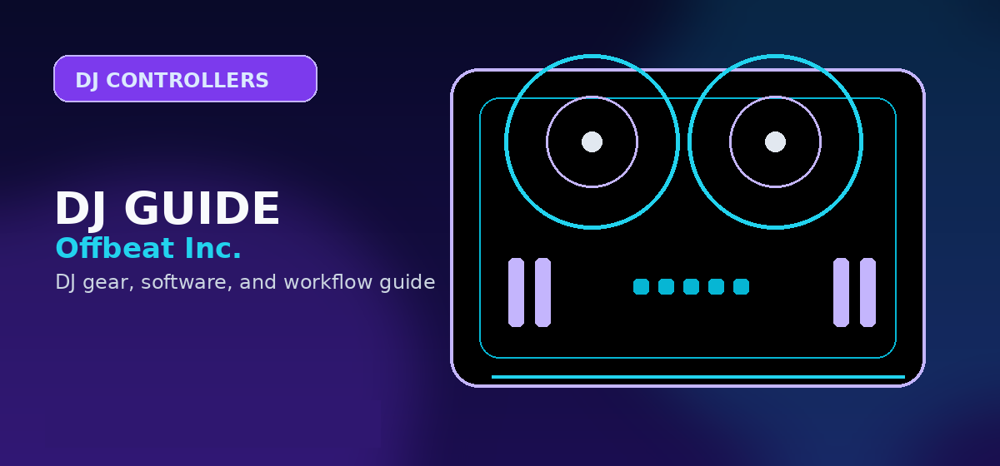

AlphaTheta DDJ-FLX2 Review
A full DDJ-FLX2 review for beginners deciding whether the cheapest modern AlphaTheta controller is enough, or whether the FLX4 is the smarter long-term buy.

Disclosure: This page uses affiliate links. We may earn a commission at no extra cost to you. Full disclosure →
A full DDJ-FLX2 review for beginners deciding whether the cheapest modern AlphaTheta controller is enough, or whether the FLX4 is the smarter long-term buy.
DDJ-FLX2 verdict
The DDJ-FLX2 is a legitimate beginner controller, not just a toy. Its value is that it gives new DJs a very low-friction way into modern app-based DJing with rekordbox, djay, Serato, Traktor Play paths, streaming services, USB-C power, and a compact layout. Its weakness is that it solves the “how do I start?” problem better than the “how do I grow into paid gigs?” problem.
Recommendation
Buy the FLX2 if the buyer is casual, budget-sensitive, space-limited, or starting from phone/tablet practice. Buy the FLX4 instead if the buyer already knows they want to learn properly, connect to speakers more often, and keep the controller longer.
What the FLX2 gets right
- Accessible setup: The compact two-channel layout makes the first session less intimidating.
- Modern app support: It works across several current DJ software paths, including rekordbox, djay, Serato, and Traktor Play contexts.
- Streaming-friendly learning: It is well positioned for beginners who do not yet own a large local music library.
- USB-C simplicity: It fits modern laptop, tablet, and mobile workflows better than older entry units.
- Low regret risk: The buyer can test DJing without spending standalone-system money.
Where the FLX2 is limited
Hardware limits
The FLX2 has compact outputs and simplified controls. That is fine for practice and casual use, but it is not the controller to recommend for wedding work, club preparation, microphone-heavy events, or serious scratch practice.
Growth limits
Because it is so compact, the FLX2 can become a stepping stone quickly. Serious learners may save money over time by starting with the FLX4 instead.
FLX2 vs FLX4
| Decision factor | DDJ-FLX2 | DDJ-FLX4 |
|---|---|---|
| Best buyer | Casual beginner, tiny setup, phone/tablet learner | Serious beginner who wants a longer upgrade path |
| Physical controls | Minimal and compact | More complete beginner layout |
| Gig readiness | Low | Better, though still not a pro flagship unit |
| Software path | Broad current app compatibility | Strong rekordbox/Serato beginner path |
| Recommendation | Buy only when low cost and size matter most | Default first serious controller |
Who should buy the FLX2?
The FLX2 fits students, dorm rooms, kitchen-table practice, casual streaming users, and buyers who are not sure they will stick with DJing. It also fits gift buyers because it is easier to justify than a more expensive controller. It does not fit DJs who need microphone inputs, balanced outputs, professional event redundancy, or a controller that will anchor a multi-year mobile rig.
Review positioning
The FLX2 review should not oversell the product. Its strength is accessibility: compact size, current app support, streaming-friendly beginner workflows, and low purchase friction. Its weakness is that the same simplicity limits long-term growth. That is why the FLX2 belongs next to the FLX4 in the buying decision instead of being treated as the universal beginner answer.
The reader most likely to benefit is a casual learner, gift buyer, student, or app-first user. The reader most likely to be disappointed is someone expecting microphone-heavy event work, club preparation, full-size output flexibility, serious scratch practice, or long-term mobile DJ reliability.
The Best next steps are beginner controllers, Spotify, Apple Music, and controller-to-speaker setup. That connects the FLX2 to its natural buyer journey and keeps it from competing with larger controller pages.
FLX2 setup and upgrade path
The cleanest FLX2 setup is a phone, tablet, or laptop connected by USB-C, wired headphones, and a small wired speaker or monitor pair. Bluetooth MIDI can be useful for casual control, but wired audio is the safer path when timing matters.
Upgrade from the FLX2 when you need stronger speaker outputs, larger controls, better microphone handling, or a controller that feels closer to the gear used at gigs. The natural step-up is the DDJ-FLX4 for beginners who want more room, then the DDJ-GRV6 or DDJ-FLX10 for DJs who need four-channel and performance depth.
Where the DDJ-FLX2 makes sense
The DDJ-FLX2 makes the most sense as a low-risk starter controller for casual practice, phone/tablet experiments, and learners who are not ready to commit to a larger setup. It is not the right target for mobile gigs, heavy microphone use, or DJs who already know they want full-size jogs and stronger outputs.
Official product and support pages
The FLX2 is best treated as an ultra-portable starter controller, not a long-term gig controller.
Its appeal is low friction with mobile/laptop practice, not professional output routing.
Step up to FLX4 when headphone cueing, outputs, and resale value matter more.
Use these official pages to confirm current specifications, software compatibility, and support details before buying.
Frequently Asked Questions
Is the DDJ-FLX2 good for beginners?
Yes, it is good for casual beginners, small setups, and app-based practice. The FLX4 is better for serious long-term learning.
Can you DJ with Spotify on DDJ-FLX2?
The FLX2 can participate in current app and streaming workflows, but Spotify support depends on the DJ app, account, platform, and restrictions.
Is the DDJ-FLX2 good for gigs?
It is not the recommended controller for paid gigs. Use it for practice, casual parties, and learning.
What should I check before buying this DJ controller?
Confirm software compatibility, audio outputs, headphone cueing, driver support, and whether the controller fits your real practice or gig setup.
Is this controller category good for beginners?
It can be, but beginners should prioritize reliable software support, simple routing, and controls that teach transferable DJ habits before paying for advanced performance features.